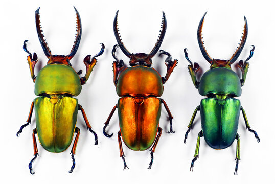
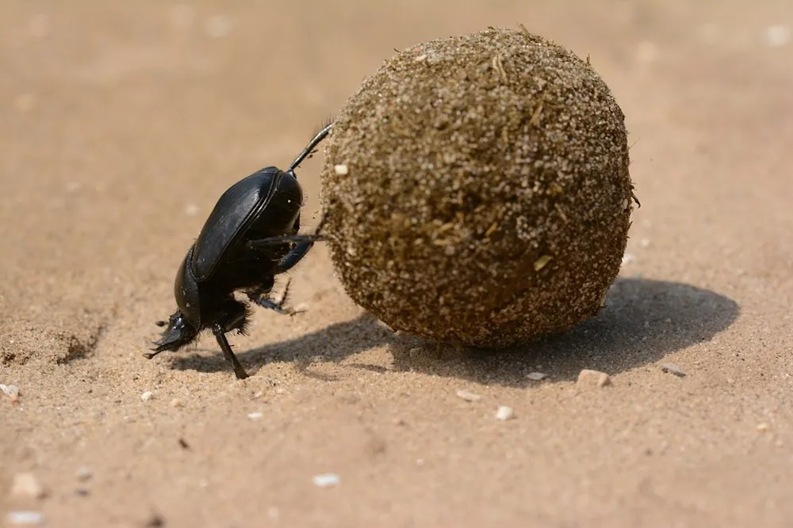
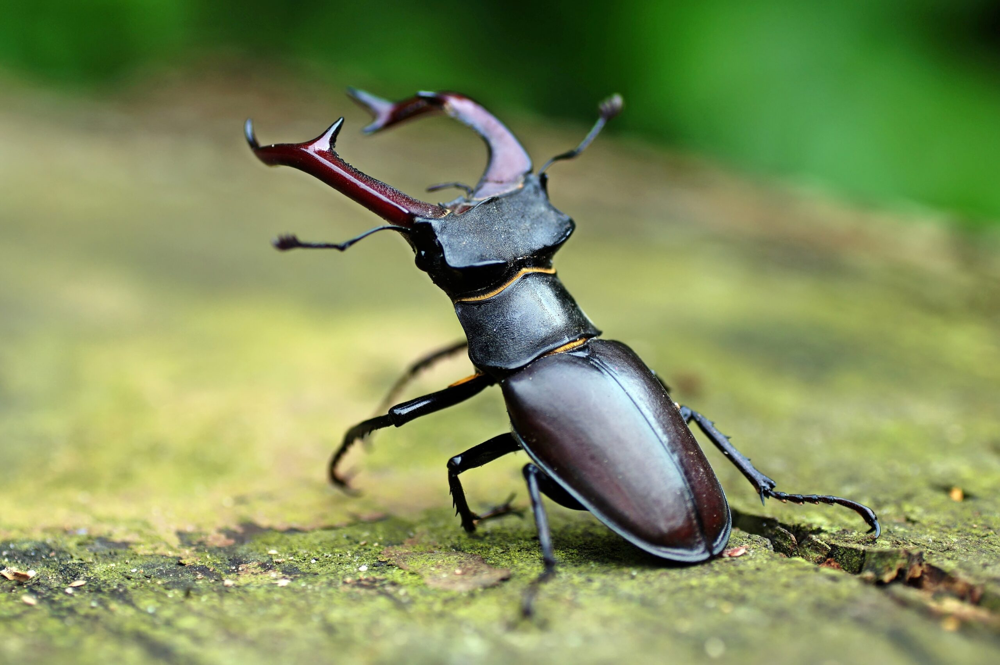

Colors of Beetles
Did you know there are thousands of differently colored beetles?
The colors of the beetles shell can change with the direction that you are looking at it! Beetles are also a variety of different colors because they need to blend into their surrondings and avoid detection by predators.
Here is an example of different colors of Stag Beetles and information about coloring in other insects as well!

The colors of insects help with signaling, protection of the body, and physiological adaptations. Additionally, colors communicate through a variety of channels. These channels are useful for identifying species, identifying unique characteristics, and exposing ecological or evolutionary facets of animal life. In the last few years, social hymenopterans like ants, wasps, and bees have become more and more interesting subjects for color research. Numerous of these insects serve as model organisms for research and offer significant ecosystem services. Here, we go over the advantages that social insects of different color varieties offer, highlight future directions, and summarize real-world applications. While it's true that ants primarily use color for camouflage, there is evidence linking the evolutionary role of color in ants to thermoregulation and pathogen resistance in the case of melanin coloration.
Beetle image: Colorful Stag Beetles by Dmitry at https://stock.adobe.com/search?k=beetles&asset_id=518815060.
Anatomy of Beetles
Beetles have arms and legs just like us! Guess we are not that different after all.
Beetles come from the family of insects called: Coleoptera. As you can see in the image, beetles have similaily named body parts to humans such as; tibia, eye, head, and even teeth!
Here is the anatomy of a Japanese Stag Beetle below!

Beetle image: Stag Beetle Anatomy by J.B. Dunlap at https://idtools.org/scarab/index.cfm?pageID=1549.
Purpose of Beetles
Did you know beetles have all different kinds of jobs and purposes?
Pictured below is a Dung Beetle working.

Beetle image: Dung Beetle Working by R. Jones at https://www.smithsonianmag.com/science-nature/the-humble-dung-beetle-180967781/
Their work improves pasture by removing waste and keeps fly populations under control!
Beetles have many jobs ranging from mating to creating useable soil and eating rotten wood.
Here are some common purposes of beetles:
- Decomposition of organic matter
- Pollination of flowers
- Pest control by feeding on harmful insects
- Aerating soil through burrowing
- Indicators of environmental health
Get Involved!
Did you know that just like other animal species, beetles can also struggle facing extinction? One of those beetles is the Stag beetle. Below is in image of a Stag beetle posed on a log. If you want to be able to keep seeing images or even see the real life thing the Stag beetles need YOUR help!

Beetle image: Stag Beetle by T. Bruder at https://stock.adobe.com/search?k=totholzbewohner&asset_id=111879118
Beetles that are near extinction:
- Tiger Beetles
- A beetle known for their aggressive predatory habits and running speed.
- Carrion Beetles
- These beetles are an important part of a vast host of scavengers that are responsible for recycling decaying materials back into the ecosystem.
- Fire Fly Beetle
- They are soft-bodied beetles commonly called fireflies, lightning bugs, or glowworms for their conspicuous production of light, mainly during twilight, to attract mates.
Click the link below to donate to help endangered beetles!
Donate to Stag Beetles!